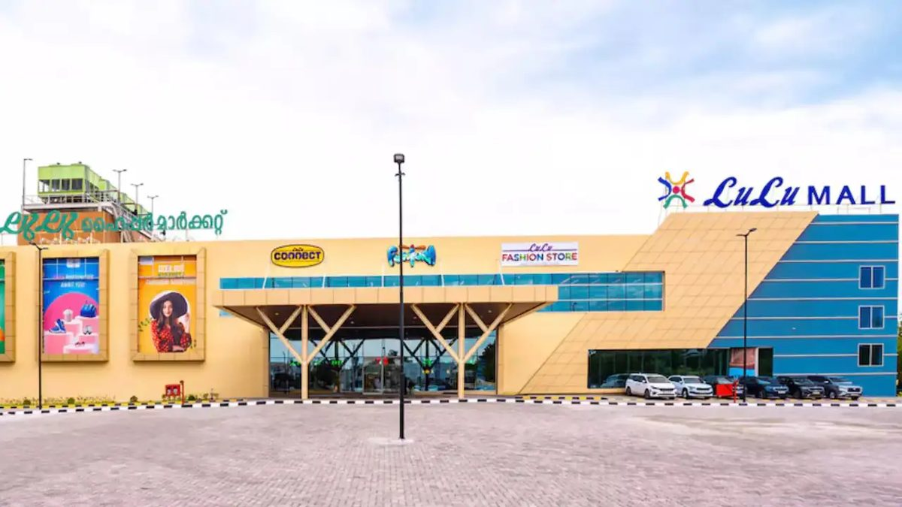
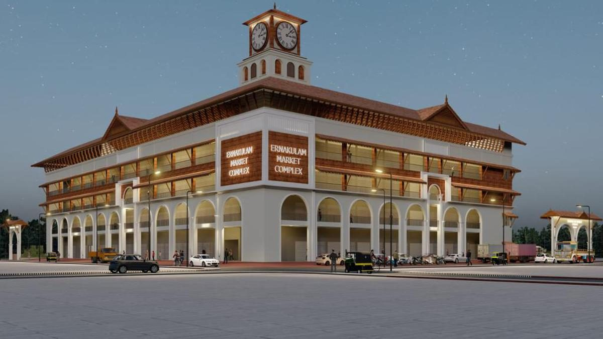
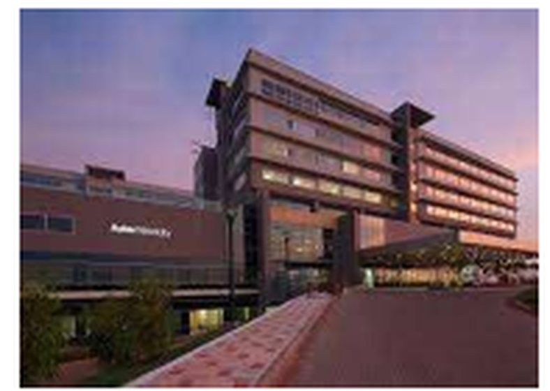
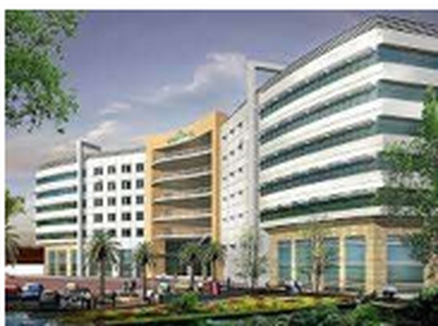
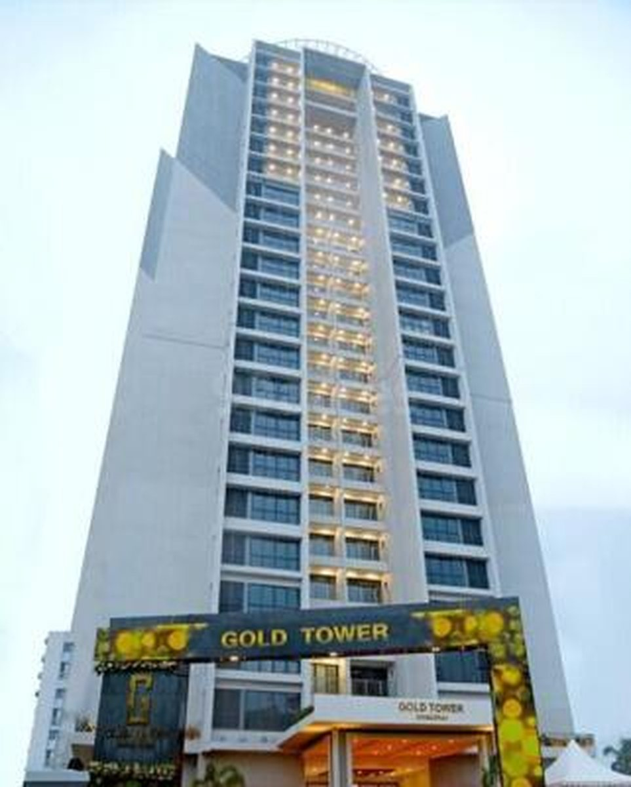
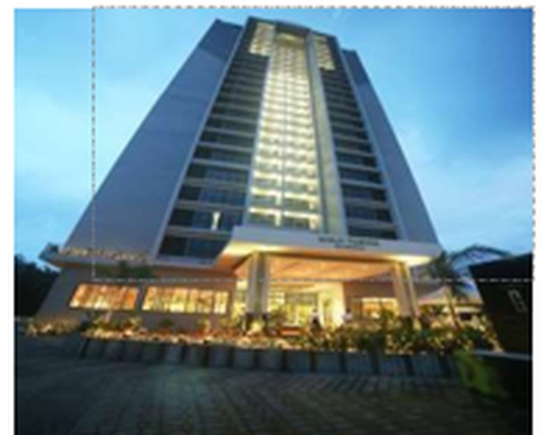
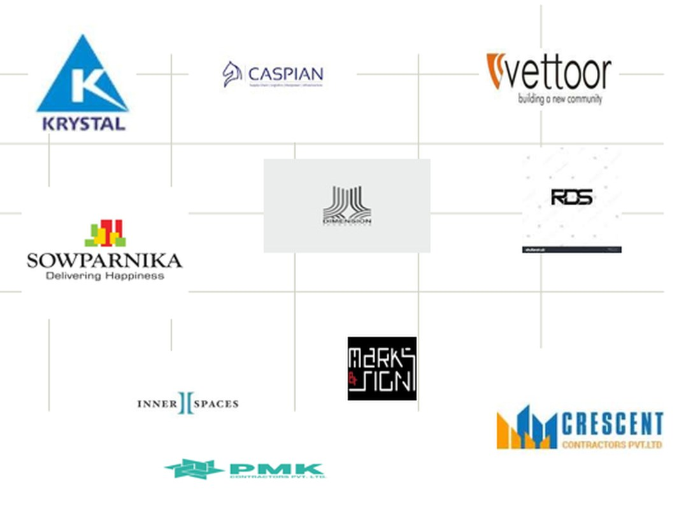

Er. Rakhi R.
Technical Director — Civil
B.Tech Civil, MBA. 21+ years. Infopark Athulya, Aster Medcity, Gold Tower, Prestige Hillside Gateway.
SAT PMC is a project management consultancy in Kochi. We hold the programme, the budget and the contract for developers, builders and government agencies — from the detailed project report through to handover — as a single point of contact.
Projects delivered by our core team
Where we sit
Most consultants join for one phase. We run the full lifecycle, which is what makes delay attribution, cost variance and contract exposure traceable rather than argued after the fact.
Drag to rotate
Phase 01
Scope, cost plan and programme set down before a rupee is committed.
SAT role Author the DPR
SAT PMC holds all eight. One contract, one point of contact.
Capability
Services in detail
Full-lifecycle PMC from detailed project report through to handover, as your single point of contact.
Read more → Planning & schedulingBaseline programmes, progress monitoring, delay analysis and extension of time claims.
Read more → Quantity surveyingEstimates, BOQ, budget validation, cash flow, material reconciliation and cost variance reporting.
Read more → Tendering & contractsPrequalification, tender documentation, bid comparison, negotiation and contract administration.
Read more → Arbitration & disputesClaim preparation and defence, forensic delay analysis, quantum assessment and arbitration support.
Read more → Technical due diligenceIndependent condition survey, real percentage complete, cost-to-complete and compliance review.
Read more →Scheduling and monitoring on works routed through:
Delivered across:
Core team
Eight specialists with a combined 100+ years across civil, MEP, contracts, environment, structures, quality and construction finance.
Technical Director — Civil
B.Tech Civil, MBA. 21+ years. Infopark Athulya, Aster Medcity, Gold Tower, Prestige Hillside Gateway.

Technical Director — MEP
Mechanical Engineering, MBA. 25+ years in MEP, infrastructure, procurement and asset management.

Head — Contracts & QS
Civil Engineering, NICMAR. 20+ years in tendering and estimation for metro, buildings and water sector. Formerly Gammon India.

Head — Environmental
MSc, PhD. QCI-NABET accredited EIA expert. Environmental monitoring, pollution control and water treatment.

Chartered Accountant
Cost and financial consultancy, company registration, construction finance structuring.
Associate Architect
15+ years across apartments, villas and multistorey residential design.
Structural Consultant
M.Tech Structures. 10+ years in structural design and proof checking.
Quality Management
B.Tech Civil, PGDM (NICMAR). QA/QC systems and site quality assurance.
Track record
Currently engaged






Clients

Common questions
A PMC acts for the client, not the contractor. It sets the programme and budget, proof-checks the design, runs tendering, monitors progress and cost on site, and closes the project out at handover. The point is that delay and cost overrun get traced and controlled as they happen, instead of being argued about afterwards.
A contractor builds the works and is paid for the works. A PMC is appointed by the client to protect the client's programme, budget and contractual position — including checking the contractor's claims, quality and progress. The two roles are deliberately independent of each other.
As early as the detailed project report or feasibility stage. Most of the cost and programme benefit is available before the design is frozen and tenders go out. We are also appointed mid-project, usually for cost control, delay analysis or dispute support.
Yes. We are based in Ernakulam and most of our projects are in Kerala, but we take appointments anywhere in India. Planning, cost consultancy, tendering and claims work runs remotely with periodic site visits. Full-time construction supervision needs people on site, so we mobilise a resident team for the project and price it accordingly.
Yes. Our team has scheduling and monitoring experience on works routed through KIIFB, HITES, WAPCOS and KSITIL, including prequalification, tendering and empanelment support.
Yes. Alongside commercial and institutional work we provide PMC and cost consultancy on private residences and apartment developments, including projects in Kollam and Mavelikkara.
Typically as a percentage of project value, or a fixed monthly fee for defined scope such as scheduling and cost monitoring. We issue a written scope and fee proposal after understanding the project's size, stage and duration.
Where we work
Our office is in Kalamassery, Ernakulam, and most of our work is across Kerala:
We also take appointments anywhere in India. Planning, cost consultancy, tendering and claims work can be run remotely with periodic site visits; full-time construction supervision needs a resident team, which we mobilise for the project. Tell us where the site is and we will propose a structure that fits.
Contact
Send the basics — location, asset class, approximate value and where you are in the programme. We will come back with a scope and fee proposal.